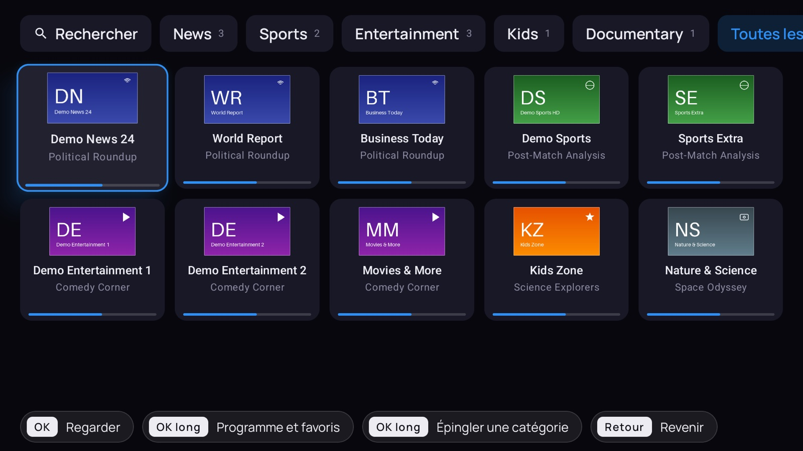
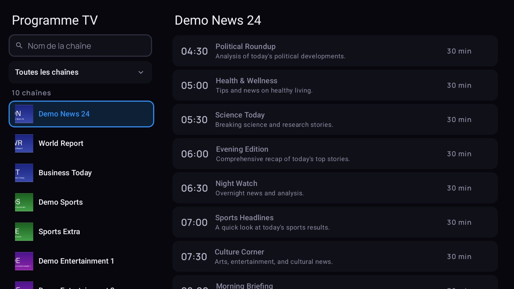
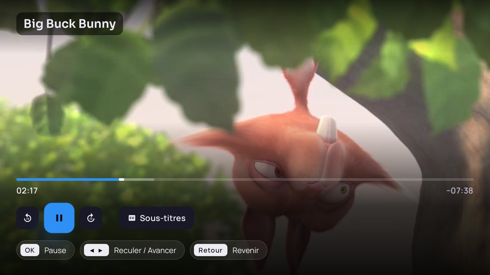
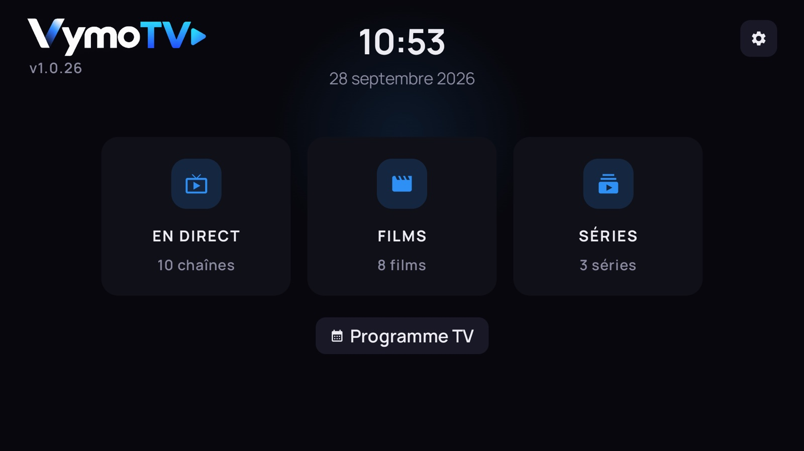

Votre abonnement mérite mieux qu'une liste de chaînes.
VymoTV en fait une vraie télévision : l'émission en cours s'affiche sous chaque chaîne, le programme tient sur un écran, vos films reprennent où vous les aviez laissés. Tout à la télécommande, lisible depuis le canapé.
Android TV, Google TV, Fire TV et box Android · aucun compte VymoTV à créer

Ce que ça change au quotidien
On voit ce qui passe, pas des noms
La mosaïque du direct affiche sous chaque chaîne l'émission en cours et une barre qui dit où elle en est. On choisit avec les yeux, pas en lisant une liste.
Une rubrique « Récemment vues » remonte celles que vous venez de regarder, et un appui long ouvre la chaîne : ses favoris, sa soirée, et le replay quand le serveur le permet.

Le programme, sans chercher
Les chaînes à gauche, leur journée à droite, une barre qui suit l'heure. Un champ de recherche pour retrouver une chaîne par son nom, des filtres pour ne garder que le sport, l'info ou les enfants.
C'est aussi là qu'on masque pour de bon une chaîne qui ne sert jamais. Elle disparaît alors de la mosaïque aussi : réglé une fois, réglé partout.

Les films reprennent tout seuls
Les affiches, la note, la catégorie : on reconnaît un film avant de lire son titre. Et s'il reste en cours, la reprise est proposée directement depuis la liste — pas besoin de rouvrir la fiche pour retrouver où on en était.
Les séries suivent le même principe, épisode par épisode.

Un lecteur qui ne demande rien
Barre de progression, sous-titres et pistes audio à portée d'OK, retour arrière quand le serveur le permet. Chaque écran rappelle en bas ce que font les touches : personne n'a besoin d'apprendre quoi que ce soit.

Et une version pour ceux que ça dépasse
Un réglage, et l'accueil ne garde que trois grandes portes : Direct, Films, Séries. Le clavier, les réglages du lecteur et les informations d'abonnement disparaissent, et le direct s'ouvre directement sur les favoris.
Un second réglage agrandit tous les textes. Un code à quatre chiffres peut verrouiller les réglages, pour que rien ne se dérègle par accident.

Et aussi
La recherche marche hors ligne
Films, séries et chaînes déjà reçus sont cherchés sur l'appareil. Deux lettres suffisent, et la dictée évite le clavier quand la télécommande en a un micro.
Un contrôle parental
Un code verrouille les catégories que vous désignez, une par une. Il faut le saisir pour les ouvrir, et un réglage à part fait disparaître les contenus réservés aux adultes.
Plusieurs abonnements
On enregistre plusieurs accès et on passe de l'un à l'autre depuis l'accueil. Chacun garde ses favoris, ses reprises et ses réglages.
Ça s'ouvre même quand ça rame
Le catalogue et le programme restent en mémoire sur le téléviseur. L'application s'affiche immédiatement et se met à jour en arrière-plan, sans écran de chargement.
Rien ne sort de chez vous
Aucune régie publicitaire, aucune mesure d'audience, aucun rapport de plantage. Vos identifiants restent sur l'appareil et ne partent qu'au serveur que vous avez indiqué.
Les mises à jour arrivent seules
L'application vérifie s'il existe une version plus récente et propose de l'installer. Pas de fichier à retélécharger à la main tous les mois.
L'installer sur votre téléviseur
Ouvrez Downloader sur votre téléviseur et saisissez ce code.
En attendant, le bouton en haut de page télécharge directement l'APK.
- Depuis le Play Store de votre téléviseur, installez Downloader (l'application à l'icône orange).
- Ouvrez-la et saisissez le code ci-dessus, puis validez.
- Android demandera l'autorisation d'installer depuis cette source : acceptez.
- Ouvrez VymoTV et saisissez l'adresse de votre serveur et vos identifiants.
VymoTV est un lecteur. Il n'héberge, ne fournit et ne vend aucun contenu : il affiche celui de l'abonnement que vous possédez déjà, et dont vous saisissez vous-même l'adresse et les identifiants.